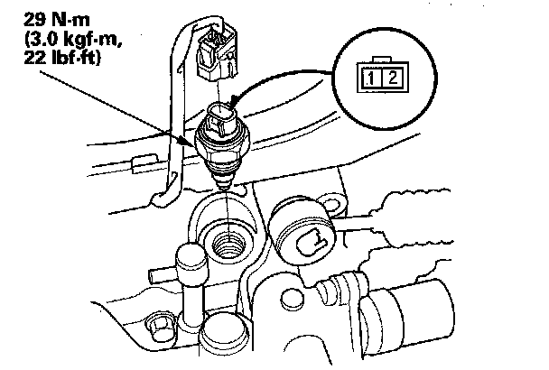

Back-Up Light Switch Test
Back-up Light Switch Test1. Disconnect the back-up light switch connector.

2. Check for continuity between the back-up light switch 2P connector terminals No. 1 and No. 2. There should be continuity when the change lever is only in reverse.
3. If necessary, replace the back-up light switch. Apply liquid gasket (P/N 08718-0002) to the switch threads, and install the switch on the transmission housing.